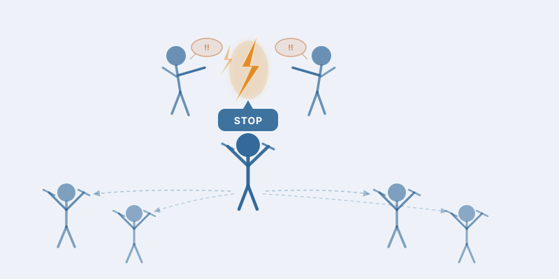
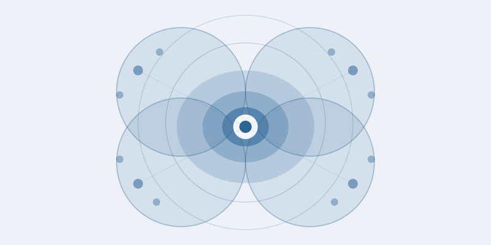
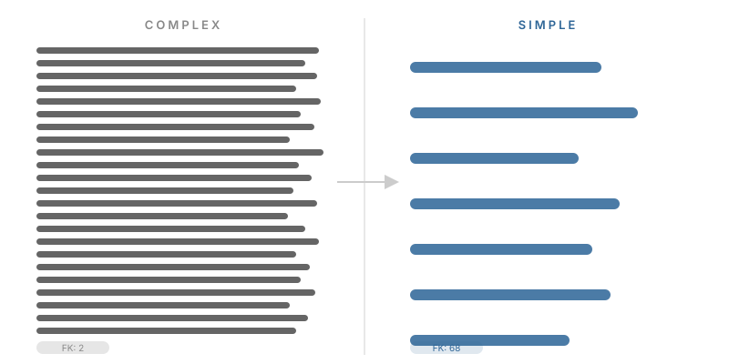
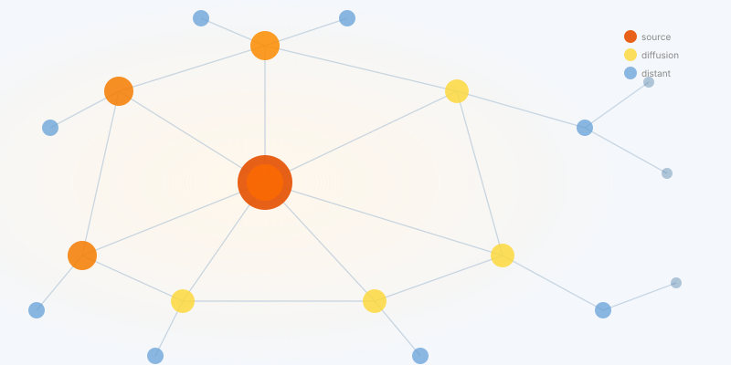

Projects
My research sits at the intersection of political behavior, comparative politics, and the empirical study of democracy. A central theme is how social norms shape citizens’ political attitudes and actions — from democratic resilience and reactions to extremism, to political protest and mobilization. I pursue these questions through (quasi-)experimental designs that connect theoretical arguments to real-world outcomes.
Click any card for details.

Everyday Democratic Defense
When and why do ordinary citizens defend democracy in their daily lives — beyond elections and institutions?
Extremism
Causes and consequences of extreme party emergence, hate crimes, and voter polarization

Democratic Norms
How social norms shape citizens' democratic attitudes, tolerance, and democratic resilience

Protest
How exposure to protest movements affects bystanders, local communities, and electoral outcomes

Messaging Styles
How political elites craft messages and how voters respond to linguistic complexity and framing

Diffusion
How parties' policy positions diffuse across nations through transnational alliances and multilevel governance